Guitarist · Trombonist · Singer · Orange County, CA
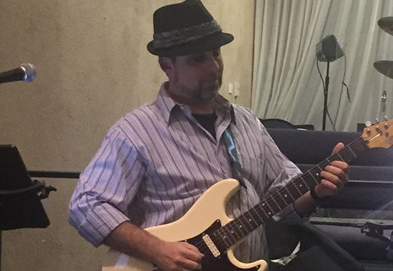
Sable is a musician based in Orange County, CA. He plays guitar and trombone, sings, and has a long history of performing at venues, concerts, and community events across the Los Angeles and Orange County area.
His projects span klezmer and Jewish folk music with the South Coast Simcha Band, parody recordings, acoustic duo work, and live performances at venues from Fashion Island to synagogue concerts.
Sable was a trombone player in the US Army from 1997 to 2002. Sable completed his M.A. in Music from CSU Los Angeles in 2004.
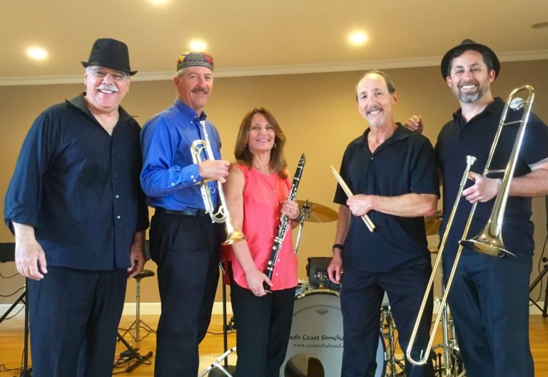
Sable plays trombone, guitar, and sings Yiddish and Hebrew with the South Coast Simcha Band, a klezmer ensemble performing at city concerts, festivals, and private events throughout Los Angeles and Orange County.
We would love to play for your simcha, bar/bat mitzvah, or temple event.
Some photos from live events.
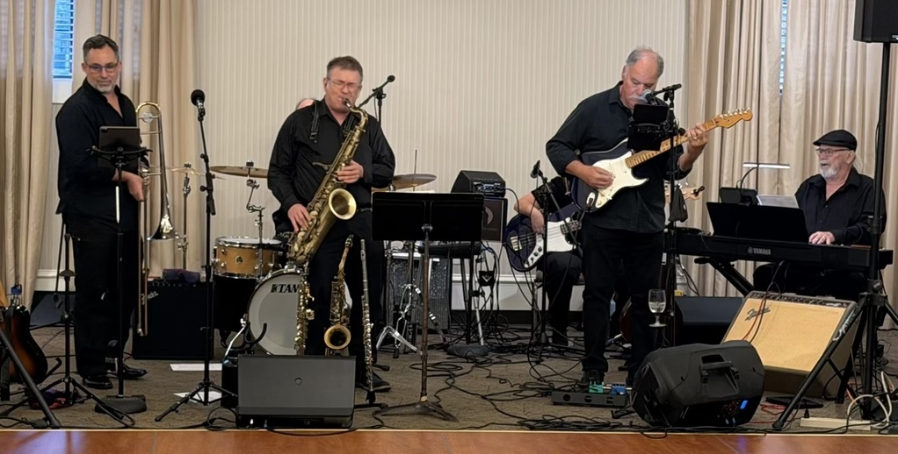
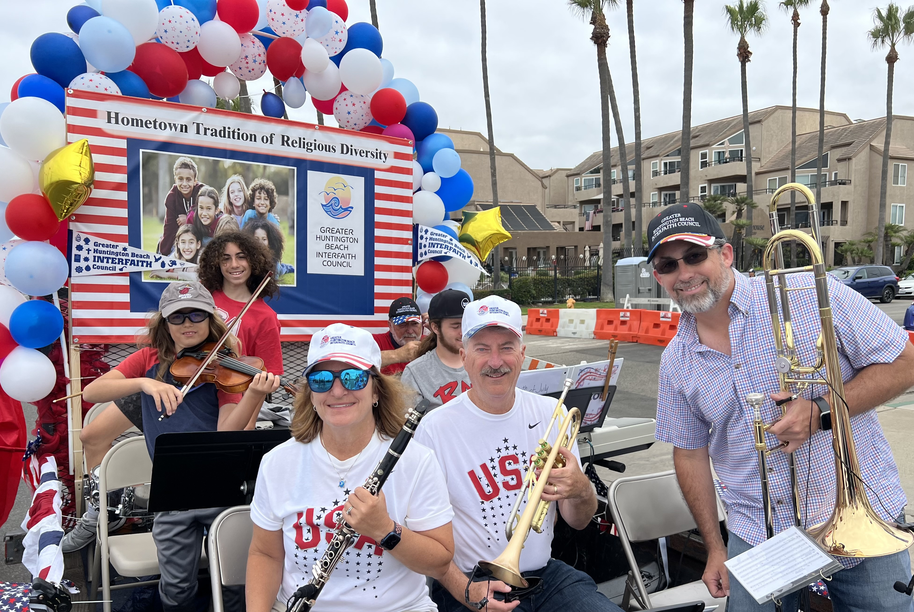
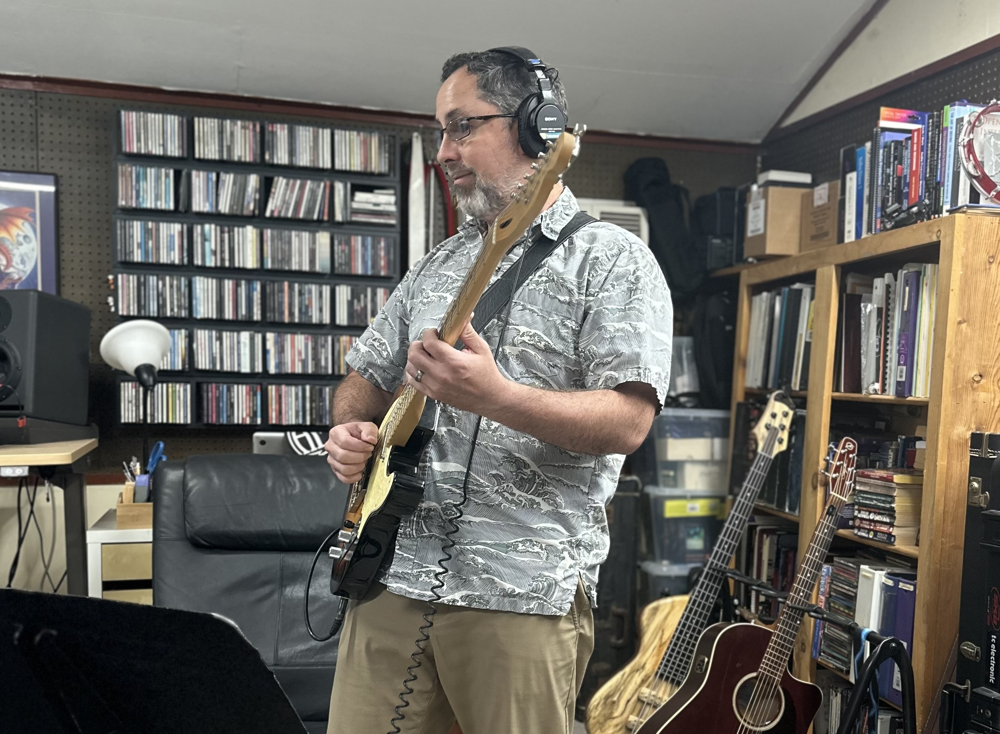
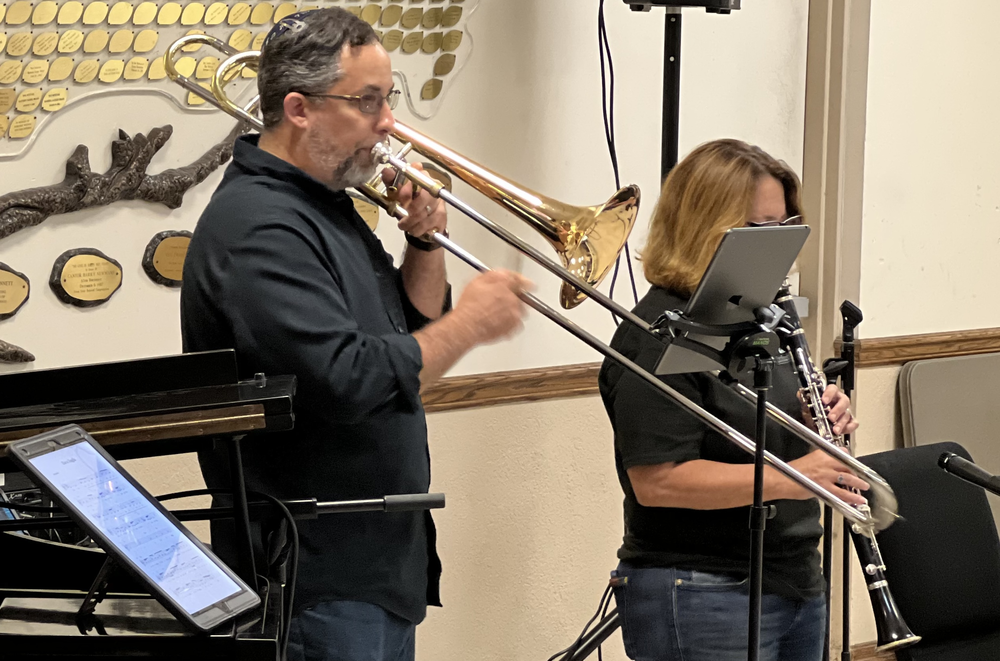
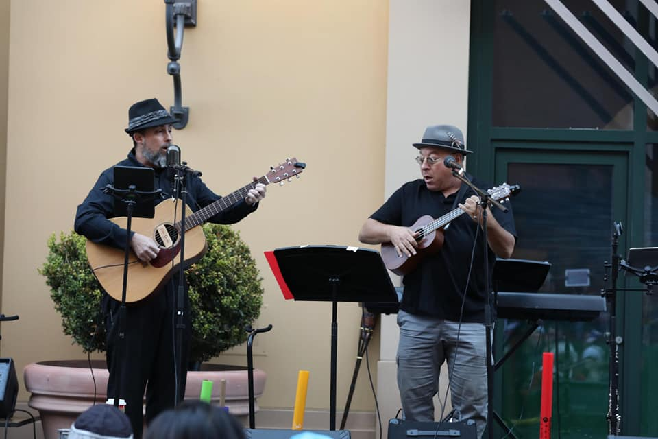
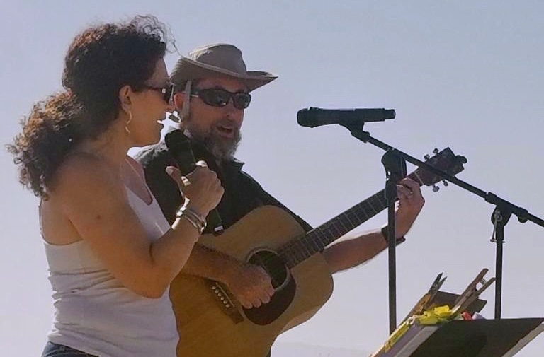
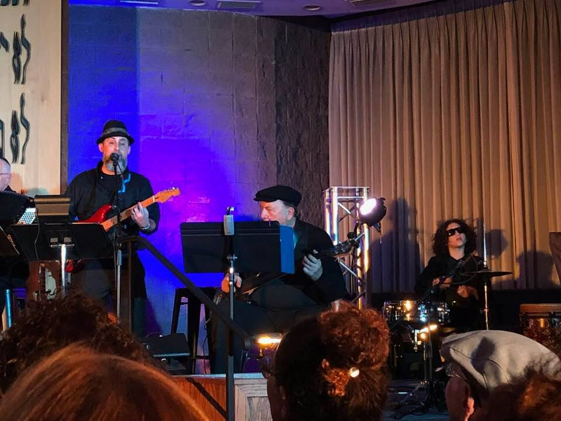
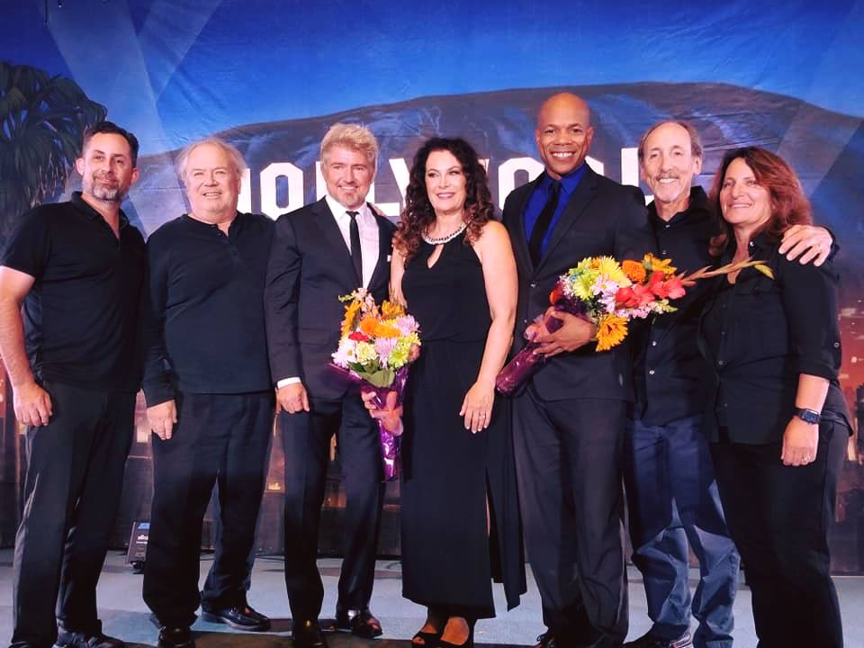
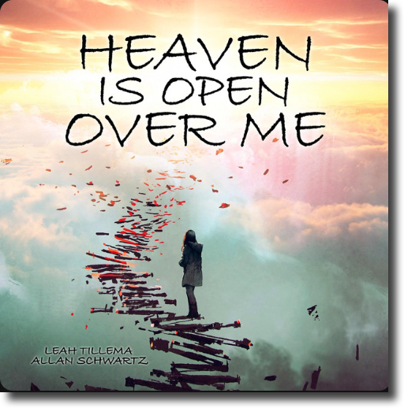
Sable performed and recorded the instrumentation for Leah's voice and song. Check it out on spotify.
Sarcastic Ladyland is Sable and Dave's parody project. Check out the catalog on Bandcamp for big laughs.
— Sable